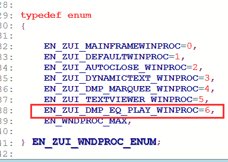
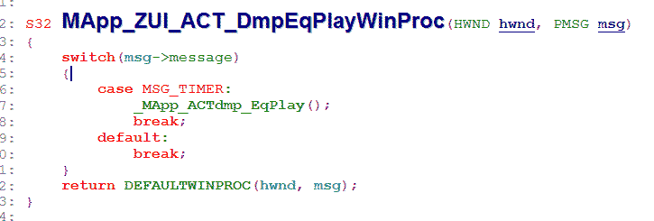
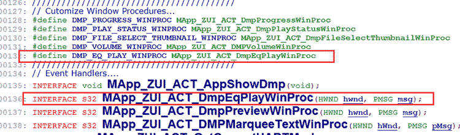
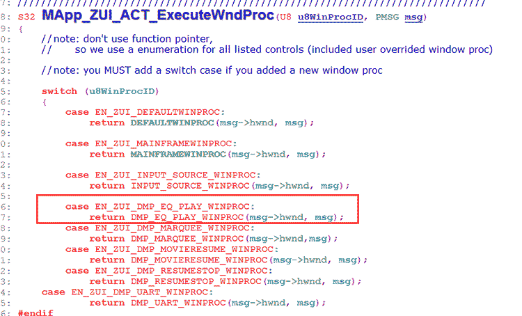
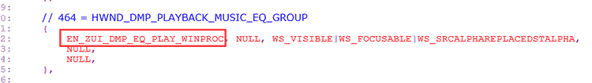

| [跳到末尾][返回主页] | |
| 软件定时器学习 | |
| 知识模块 | （以下内容都是基于Mstar NonOS软件架构而言） |
概述
|
|
|
定时器——指以系统时间为基础，在设定启动后通过计数器计数，在给定的时间限定到达时，跳转到定时服务函数接口，执行给定任务的一种软件机制。 添加定时器的过程最好结合代码一起来。 第一步：定义自己定时器的ID名称 在 ZUI_wndproc_h.inl 文件中的枚举 EN_ZUI_WNDPROC_ENUM 中添加 EN_ZUI_DMP_EQ_PLAY_WINPROC，如图所示：  第二步：书写定时服务函数 根据定时器服务的UI在对应的 MApp_ZUI_ACTXXX.c 文件中书写对应的服务函数体，注意格式可以参考已有的函数体。  第三步：定义一个名字，用来代替上面定义的函数体（格式）在对应的 MApp_ZUI_ACTXXX.h 文件中写两条语句：  第四步：添加ID调用Code 在文件 MApp_ZUI_ACTglobal.c 中MApp_ZUI_ACT_ExecuteWndProc(U8 u8WinProcID, PMSG msg) 函数中添加 case ID 语句，如下图  第五步：给要执行定时器功能的控件赋值属性 前四步是我们创建了一个名为 EN_ZUI_DMP_EQ_PLAY_WINPROC 的定时器属性，属性必须要要有载体才能运行，这个载体就是我们的控件，如下图所示在控件属性的第一个元素上写上 EN_ZUI_DMP_EQ_PLAY_WINPROC 即可。 在文件 ZUI_DMP_tables_c.inl 中找到对应的控件ID，赋值属性  到这里一个软定时器就添加完成了。 注意：添加完后需要启动定时器才能有作用： 启动定时器：MApp_ZUI_API_SetTimer(控件ID, 定时器ID, 定时时间) 复位定时器：MApp_ZUI_API_ResetTimer (控件ID, 定时器ID) 杀死定时器：MApp_ZUI_API_KillTimer (控件ID, 定时器ID) |
|
|
我个人的理解，定时器的任务有四类，分别是 系统倒计时、控件的消隐、特效（如字符滚动、闪烁等）、用于外部信号的解析。
|
|
| [返回主页][返回顶部] | |
| ※※※※※※※※※※※※※※※【札 记 分 享】※※※※※※※※※※※※※※※ | |
| 读万卷书，行万里路 | |
| 本想沉溺于莲花深处，不料翻滚于水物之间 |
| 更新日期 2018年2月8日 星期四 18:15 |
| 欢迎访问官网 www.fy2000.com 蓝天的精灵工作室 |